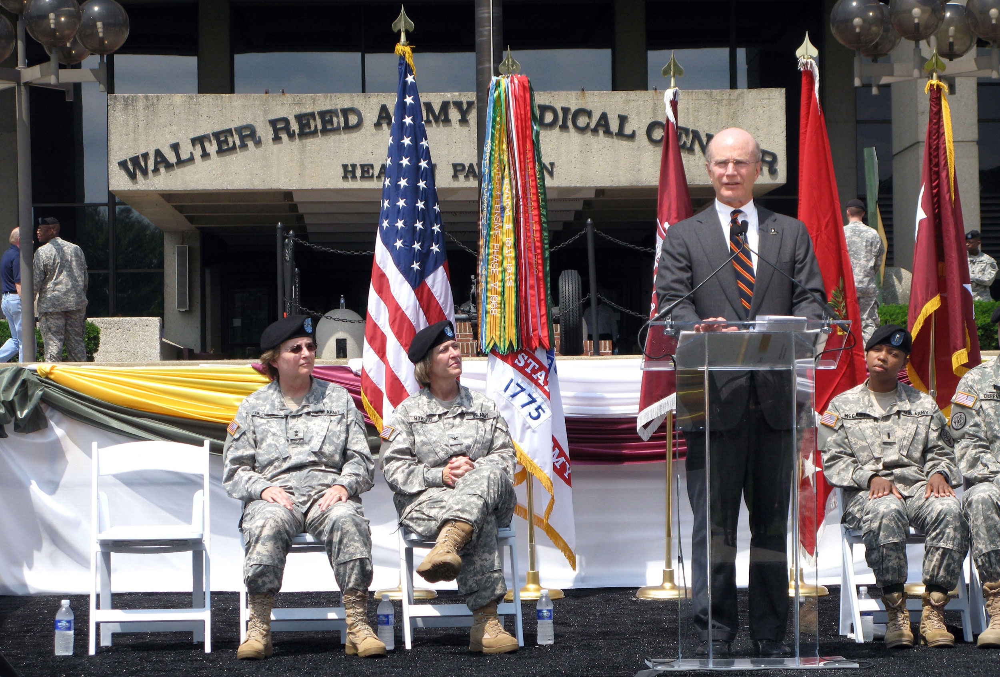
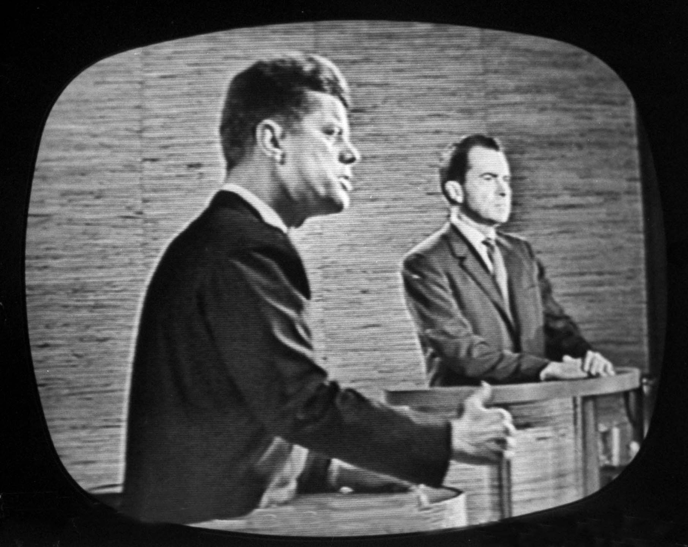

Figure 15.8
In 2007, The Washington Post published a critical exposé on the Walter Reed Army Medical Center. In response to the public outcry, the U.S. Army launched an investigation and set about improving the facility. As demonstrated in this case, media coverage can directly influence people’s lives.
Media have long had a voice and a role in politics. As you have read in earlier chapters, even some of the earliest newspapers and magazines used their pages as a forum for political discourse. When broadcast media emerged during the 20th century, radio briefs and television reports entered the conversation, bringing political stories to the public’s living rooms.
In addition to acting as a watchdog, media provide readers and viewers with news coverage of issues and events, and also offer public forums for debate. Thus, media support—or lack thereof—can have a significant influence on public opinion and governmental action. In 2007, for example, The Washington Post conducted a four-month investigation of the substandard medical treatment of wounded soldiers at Walter Reed Army Medical Center in Washington, DC. Because of the ensuing two-part feature, the Secretary of the Army and the two-star general in charge of the medical facility lost their jobs.
However, an ongoing debate exists over media’s role in politics. Many individuals wonder who is really behind certain stories. William James Willis, author of The Media Effect: How the News Influences Politics and Government discusses this debate:
Sometimes the media appear willing or unwitting participants in chasing stories the government wants them to chase; other times politicians find themselves chasing issues that the media has enlarged by its coverage. Over the decades, political scientists, journalists, politicians, and political pundits have put forth many arguments about the media’s power in influencing the government and politicians.William James Willis, The Media Effect: How the News Influences Politics and Government (Westport, CT: Praeger, 2007), 4.
Regardless of who is encouraging whom, media coverage of politics certainly raises questions among the public. Despite laws put in place to prevent unbalanced political coverage, such as Section 315, a large majority of the public is still wary of the media’s role in swaying political opinion. In a January 2010 survey, two-thirds of respondents said that the media has too much influence on the government. Additionally, 72 percent of respondents agreed that “most reporters try to help the candidate they want to win.”Rasmussen Reports, “67% Say News Media Have too Much Influence Over Government Decisions,” news release, January 14, 2010, http://www.rasmussenreports.com/public_content/politics/general_politics/january_2010/67_say_news_media_have_too_much_influence_over_government_decisions. This statistic demonstrates the media’s perceived political power along with the road the media must carefully navigate when dealing with political issues.
Throughout their respective histories, radio, television, and the Internet have played important roles in politics. As technology developed, citizens began demanding greater levels of information and analysis of media outlets and, in turn, politicians. Here we explore the transformation of politics with the development of media.
As discussed in Chapter 7 "Radio", radio was the first medium through which up-to-the-minute breaking news could be broadcast, with its popularization during the 1920s. On November 2, 1920, KDKA in East Pittsburgh, Pennsylvania, became the first station to broadcast election results from the Harding-Cox presidential race, “becoming a pioneer in a brand new technology.”“History of the Radio,” http://americanhistory.suite101.com/article.cfm/history_of_the_radio. Suddenly, information that would previously have been available only later in the newspapers was transmitted directly into American living rooms. The public responded positively, wanting to be more involved in U.S. politics.
As radio technology developed, “Americans demanded participation in the political and cultural debates shaping their democratic republic.”Henry Jenkins, “Contacting the Past: Early Radio and the Digital Revolution,” MIT Communications Forum, http://web.mit.edu/comm-forum/papers/jenkins_cp.html. Radio provided a way to hold these debates in a public forum; it also provided a venue for politicians to speak directly to the public, a phenomenon that had not been possible on a large scale prior to the invention of the radio. This dynamic changed politics. Suddenly, candidates and elected officials had to be able to effectively communicate their messages to a large audience. “Radio brought politicians into people’s homes, and many politicians went to learn effective public-speaking for radio broadcasts.”“Radio’s Emergence,” http://library.thinkquest.org/27629/themes/media/md20s.html.
Today, television remains Americans’ chief source of political news, a relationship that dates back almost to the very beginning of the medium. Political candidates began using television commercials to speak directly to the public as early as 1952. These “living room candidates,” as they are often called, understood the power of the television screen and the importance of reaching viewers at home. In 1952, Dwight D. Eisenhower became the first candidate to harness television’s popularity. Eisenhower stepped onto the television screen “when Madison Avenue advertising executive Rosser Reeves convinced [him] that short ads played during such popular television programs as I Love Lucy would reach more voters than any other form of advertising. This innovation had a permanent effect on the way presidential campaigns are run.”Museum of the Moving Image, The Living Room Candidate, http://www.livingroomcandidate.org/.
The relationship between politics and television took a massive step forward in 1960 with a series of four televised “Great Debates” between presidential candidates John F. Kennedy and Richard Nixon. Seventy million U.S. viewers tuned into the first of these on September 26, 1960. The debates gave voters their first chance to see candidates debate, marking television’s entry into politics.
Figure 15.9
In 1960, candidates John F. Kennedy and Richard Nixon brought presidential debating to television screens around the nation.
As discussed earlier in the book, the visual difference between the two candidates was staggering; Kennedy appeared much more presidential. A record number of viewers watched the debates, and many historians have attributed Kennedy’s success at the polls that November to the public perception of the candidates formed during these debates.“Kennedy-Nixon Debates,” Mary Ferrell Foundation, http://www.maryferrell.org/wiki/index.php/Kennedy-Nixon_Debates.
Later in the decade, rising U.S. involvement in Vietnam brought television and public affairs together again in a significant way. The horrors of battle were broadcast directly into U.S. homes on a large scale for the first time; although television had been invented prior to the Korean War, “the medium was in its infancy…[and] its audience and technology [were] still too limited to play a major role.”Museum of Broadcast Communications, “Vietnam on Television,” http://www.museum.tv/eotvsection.php?entrycode=vietnamonte. As such, in 1965 the Vietnam War became the first “living-room war.”
Early in the war, the coverage was mostly upbeat:
It typically began with a battlefield roundup, written from wire reports based on the daily press briefing in Saigon … read by the anchor and illustrated with a battle map…. The battlefield roundup would normally be followed by a policy story from Washington, and then a film report from the field…. As with most television news, the emphasis was on the visual and above all the personal: “American boys in action” was the story, and reports emphasized their bravery and their skill in handling the technology of war.Museum of Broadcast Communications, “Vietnam on Television,” http://www.museum.tv/eotvsection.php?entrycode=vietnamonte.
In 1969, however, television coverage began to change as journalists grew more and more skeptical of the government’s claims of progress, and there was more emphasis on the human costs of war.Museum of Broadcast Communications, “Vietnam on Television,” http://www.museum.tv/eotvsection.php?entrycode=vietnamonte. Although gore typically remained off screen, a few major violent moments were caught on film and broadcast into homes. In 1965, CBS aired footage of U.S. Marines setting village huts on fire, and in 1972, NBC audiences witnessed Vietnamese civilians fall victim to a napalm strike. Such scenes altered America’s perspective of the war, generating antiwar sentiment. Over twenty years later, in 1991, the Persian Gulf War was brought into homes across the country, as live video feed showed the impact of scud missiles striking their targets. The media, in that conflict, were accused of shaping public sentiments toward acceptance of the U.S. military involvement.
The way that news is televised has dramatically changed over the medium’s history. For years, nightly news broadcasts dominated the political news cycle; then, in the 1980s, round-the-clock cable news channels appeared. Founded by Ted Turner in 1980, CNN (Cable News Network) was the first such network. Upon the launch of CNN, Turner stated, “We won’t be signing off until the world ends. We’ll be on, and we will cover the end of the world, live, and that will be our last event…and when the end of the world comes, we’ll play ‘Nearer, My God, to Thee’ before we sign off.”TV Tropes, “Twenty Four Hour News Networks,” http://tvtropes.org/pmwiki/pmwiki.php/Main/TwentyFourHourNewsNetworks.
Twenty-four-hour news stations such as CNN have become more popular, and nightly news programs have been forced to change their focus, now emphasizing more local stories that may not be covered by the major news programs. Additionally, the 21st century has seen the rise of the popularity and influence of satirical news shows such as The Daily Show and The Colbert Report. The comedic news programs have, in recent years, become major cultural arbiters and watchdogs of political issues thanks to the outspoken nature of their hosts and their frank coverage of political issues.
Finally, the Internet has become an increasingly important force in how Americans receive political information. Websites such as the Huffington Post, Daily Beast, and the Drudge Report are known for breaking news stories and political commentary. Additionally, political groups regularly use the Internet to organize supporters and influence political issues. Online petitions are available via the Internet, and individuals can use online resources to donate to political causes or connect with like-minded people.
Media and government have had a long and complicated history. Each influences the other, through regulations and news cycles. As technology develops, the relationship between media and politics will likely become even more intermeshed. The hope is that the U.S. public will benefit from such developments, and both media and the government will seek out opportunities to involve the public in their decisions.
Choose a political topic that interests you, such as conflict in the Middle East, the legalization of marijuana, or gay marriage. Find a radio story, a television story, and an Internet story about this topic. Then write a one-page paper answering the following questions.
Review Questions
Questions for Section 15.1 "Government Regulation of Media"
Questions for Section 15.2 "The Law and Mass Media Messages"
Questions for Section 15.3 "Censorship and Freedom of Speech"
Questions for Section 15.4 "Intellectual Property Issues in the Mass Media"
Questions for Section 15.5 "Digital Democracy and Its Possible Effects"
Questions for Section 15.6 "Media Influence on Laws and Government"
Some media professionals work closely with political candidates to help them craft their public images and messages. Suppose that you were going to advise the campaign of a candidate for local, state, or national office. Choose a candidate who interests you and visit his or her existing website. Explore any other digital outreach efforts. Then answer the following questions to help you make recommendations for the campaign.